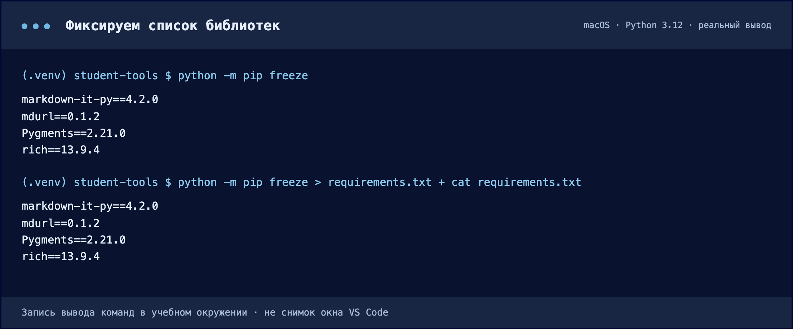
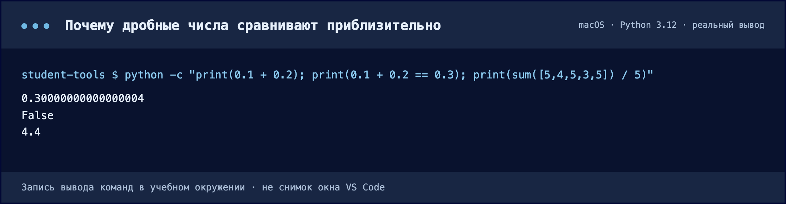
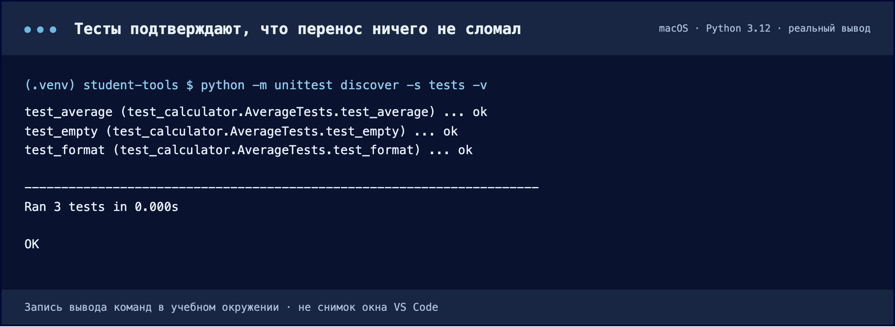
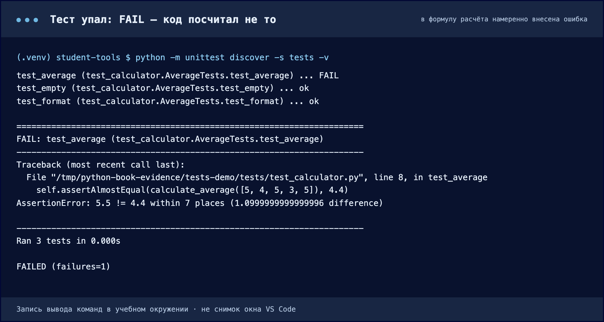
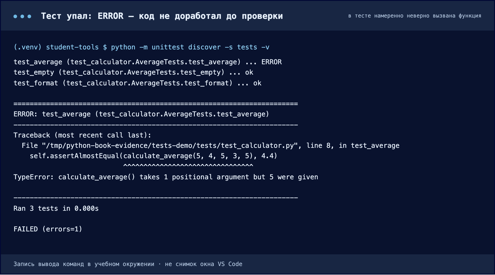
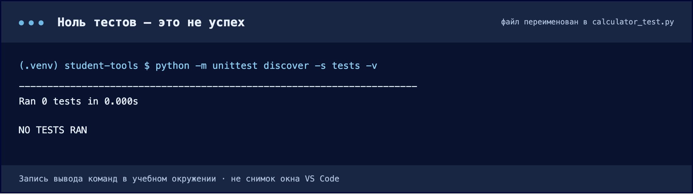
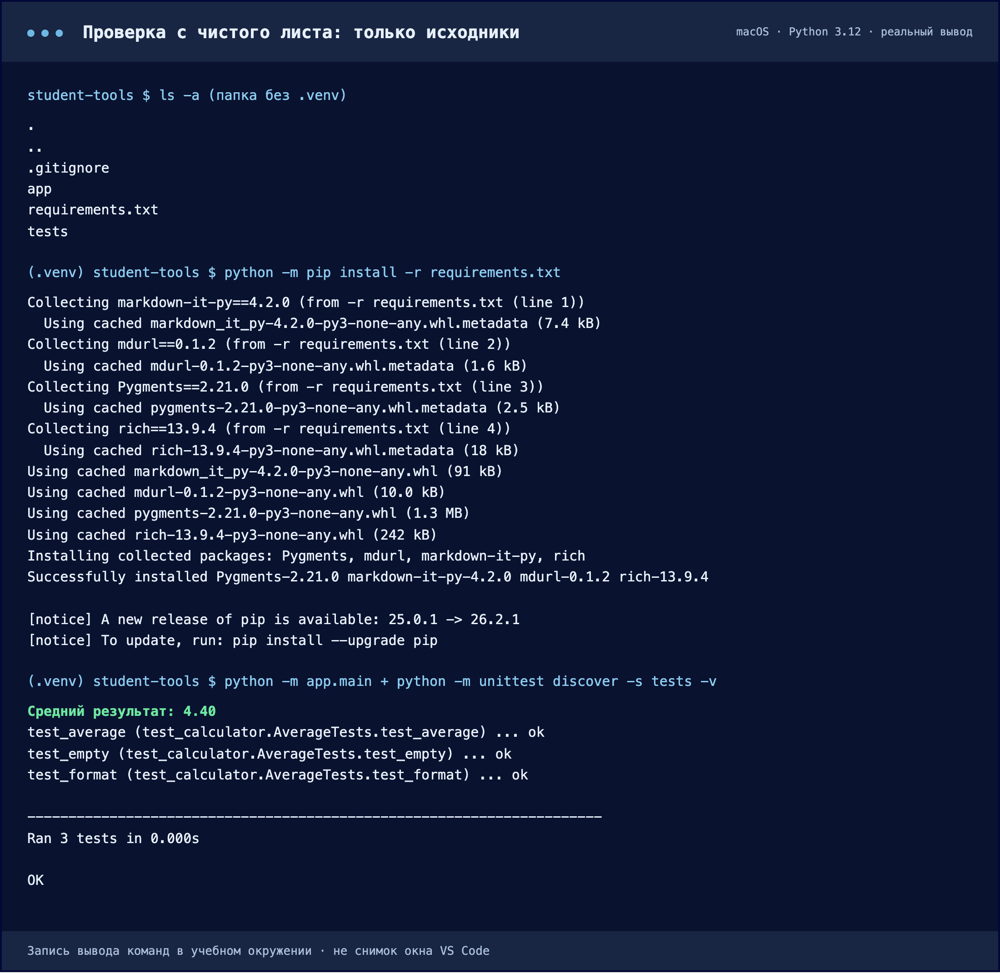

Проект, который запустится у другого
Фиксируем зависимости, объясняем запуск и отделяем исходники от локального окружения.
Передаём рецепт окружения
- Где
- Активная .venv; корень student-tools.
- Действие
- Выполните python -m pip freeze > requirements.txt. Откройте созданный файл.
- Результат
- В файле записаны строки с именами пакетов и версиями.
- Проверка
- Найдите rich; убедитесь, что файл не пуст. Если там посторонние библиотеки, проверьте выбранное окружение.
Ваша .venv зависит от компьютера и содержит локальные пути. Её не отправляют в Git или архив проекта. Другому разработчику нужны исходники, установленный Python и список зависимостей, по которому он создаст собственное окружение.
python -m pip freeze > requirements.txtВыполняйте команду в активном окружении этого проекта. freeze записывает установленные пакеты с версиями, в том числе транзитивные зависимости Rich. Символ > сохраняет вывод в файл и перезаписывает прежнее содержимое.
rich==13.9.4
markdown-it-py==3.0.0
mdurl==0.1.2
Pygments==2.18.0
Сначала freeze печатает список в терминал, затем та же команда со знаком > записывает его в файл. В списке четыре строки: сам Rich и три библиотеки, которые он тянет за собой. Версии в этом прогоне отличаются от учебного примера ниже — так и должно быть.
Скачать текст вывода ↓ · Нажмите на изображение, чтобы увеличить.Это зафиксированный набор для скачиваемого примера, а не обещание самых новых версий. Ваш freeze после pip install rich может дать другие версии. В своей работе проверяйте именно свой файл зависимостей.
Что попадёт в Git
- Где
- Explorer: корень student-tools.
- Действие
- Создайте файл .gitignore без расширения .txt. Вставьте правила ниже и сохраните.
- Результат
- Git игнорирует локальное окружение и кэш, если они ещё не отслеживались.
- Проверка
- Перед коммитом просмотрите git status: .venv и __pycache__ не должны входить в новые файлы.
.venv/
__pycache__/
*.pyc
.env__pycache__ и *.pyc — автоматически создаваемый кэш Python. .env может содержать локальные настройки и секреты. Исходники, тесты, README, requirements и сам .gitignore должны оставаться в репозитории.
app · tests · инструкции≠На компьютере
.venv · кэш · .env
README — инструкция следующему человеку
- Где
- Explorer: корень student-tools и новая папка tests.
- Действие
- Создайте README.md и tests/test_calculator.py. Сохраните код тестов ниже.
- Результат
- В проекте есть инструкция и три проверки результата.
- Проверка
- Выполните python -m unittest discover -s tests -v. Нужны Ran 3 tests и OK.
Читатель не присутствовал на занятии. Напишите, что делает программа, какая версия Python нужна, откуда выполнять команды, как создать окружение, установить зависимости, запустить приложение и что должно появиться. Названия папок объясните через обязанности.
↓Скачать пример READMEMarkdown · команды для Windows и macOS/LinuxЧто такое тест и зачем он в этой теме
Тест — это обычный код, который вызывает вашу функцию с известными данными и проверяет, что она вернула ожидаемое. Проверяет не человек глазами, а сама программа: вы один раз описываете «на списке [5, 4, 5, 3, 5] среднее равно 4.4» — и дальше эта проверка повторяется по команде за доли секунды.
В теме про структуру проекта тесты появляются не случайно. Они — первый посторонний потребитель вашего кода: тестовый файл лежит в другой папке и добирается до функций теми же импортами, что и main.py. Если структура собрана правильно, тесты запускаются сразу. Если нет — вы увидите ровно те ошибки, которые разбирали в главах 2.4 и 2.5.
Важная деталь оттуда же: тесты ваши модули импортируют, а не запускают. Поэтому main() и должен вызываться только под условием __name__ == "__main__" — иначе при каждом прогоне тестов программа будет печатать свой отчёт.
Мы используем unittest — он входит в стандартную библиотеку Python, ставить ничего не нужно. Существуют и сторонние инструменты (например, pytest), но для трёх проверок хватает встроенного.
import unittest
from app.services.calculator import calculate_average
from app.utils.formatter import format_average
class AverageTests(unittest.TestCase):
def test_average(self):
self.assertAlmostEqual(calculate_average([5, 4, 5, 3, 5]), 4.4)
def test_empty(self):
with self.assertRaises(ValueError):
calculate_average([])
def test_format(self):
self.assertEqual(format_average(4.4), "Средний результат: 4.40")
if __name__ == "__main__":
unittest.main()Как читается файл теста
import unittestи два импорта изapp— тест берёт функции из вашего пакета, как это делал бы любой другой код.class AverageTests(unittest.TestCase)— группа проверок. Наследование отTestCaseдаёт классу готовые методы сравнения, которые сами сообщают о расхождении.def test_average(self)— один тест. Имя обязано начинаться сtest: по этому признаку Python и находит, что запускать. Метод без такого имени просто не выполнится.self.assertAlmostEqual(a, b)— «должны быть равны с точностью до округления»,self.assertEqual(a, b)— «должны совпадать точно»,with self.assertRaises(ValueError):— «внутри этого блока обязана возникнуть такая ошибка». Последняя конструкция проверяет не результат, а поведение при неверных данных: пустой список должен приводить к ValueError, и если функция промолчит, тест упадёт.
Почему для среднего — assertAlmostEqual
Компьютер хранит дробные числа приближённо, и привычные равенства иногда не выполняются. Это не ошибка Python, а свойство двоичного представления дробей — с ним живут все языки.

Сумма 0.1 и 0.2 печатается как 0.30000000000000004, поэтому точное сравнение с 0.3 даёт False. Наше среднее в этом примере получается ровным, но полагаться на это нельзя: для дробных результатов берут assertAlmostEqual, а точное assertEqual оставляют строкам и целым числам — как в тесте формата.
Скачать текст вывода ↓ · Нажмите на изображение, чтобы увеличить.Команда запуска по частям
python -m unittest discover -s tests -v-m unittest — запускаем встроенный модуль тестирования тем же Python, что и программу. discover — «найди тесты сам». -s tests — начни поиск с папки tests. -v — печатай каждый тест отдельной строкой, а не точками. Команда выполняется из корня проекта: оттуда виден пакет app, который тесты импортируют.
Создайте папку tests в корне и сохраните туда файл выше. Ожидаются три успешных теста и OK: средняя обычного списка, ошибка для пустого списка и формат строки.

Каждая строка проверяет отдельное поведение. Смотрите не только на слово OK, но и на число выполненных тестов: их должно быть три.
Скачать текст вывода ↓ · Нажмите на изображение, чтобы увеличить.Как выглядит непройденный тест
Зелёный прогон полезен, но учит мало. Разберите три вида вывода — с ними вы столкнётесь в практике 2.7 и в домашней работе.
FAIL — код отработал, но посчитал не то

Здесь в формулу специально внесена ошибка: деление на len(values) - 1. Первая строка сразу помечена как FAIL, а ниже unittest показывает, какая именно проверка не сошлась и какие значения сравнивались: 5.5 != 4.4. Итог — FAILED (failures=1). Такой вывод читают снизу вверх: сначала расхождение, затем строку теста, затем идут править код программы.
Скачать текст вывода ↓ · Нажмите на изображение, чтобы увеличить.ERROR — код упал до самой проверки

Здесь ошибка в самом тесте: функция вызвана пятью аргументами вместо одного списка. До сравнения дело не дошло — Python сообщил TypeError. Разница важна: FAIL означает «проверка не сошлась», ERROR — «код сломался по дороге», и чинить в этих случаях нужно разные места.
Скачать текст вывода ↓ · Нажмите на изображение, чтобы увеличить.Ноль тестов — не победа

Файл переименован в calculator_test.py, и discover его не увидел: имя файла должно начинаться с test_, как и имена методов. Свежие версии Python честно пишут NO TESTS RAN, более старые в этой ситуации показывают OK — поэтому всегда смотрите на строку Ran N tests.
Скачать текст вывода ↓ · Нажмите на изображение, чтобы увеличить.Проверка с чистого листа
Скопируйте только передаваемые файлы в отдельную папку или скачайте свой репозиторий заново. Откройте папку, содержащую app и requirements.txt. Создайте там новое окружение и активируйте его командами главы 2.1.
python -m pip install -r requirements.txt
python -m app.main
python -m unittest discover -s tests -vЕсли видны Средний результат: 4.40 и OK, вы проверили, что проект не зависит от старой локальной .venv. В README укажите также вывод python --version.

В папке только исходники: app, tests, requirements.txt и .gitignore — окружения нет. По списку зависимостей pip ставит те же версии, после чего программа печатает 4.40, а три теста дают OK. Это и есть доказательство, что проект запустится у другого человека.
Скачать текст вывода ↓ · Нажмите на изображение, чтобы увеличить.Проверьте себя · Почему requirements.txt нужно получать в окружении проекта?
freeze перечисляет установленные пакеты выбранного Python. В общем окружении он захватит библиотеки других программ, а в неверно выбранном — может не содержать Rich.
Документация к теме
Python: venv · Python: модули и пакеты · VS Code: Python environments · pip freeze